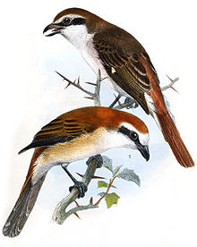
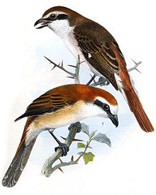

| Isabelline Shrike | |
|---|---|
|  | |
| Conservation status | |
| Binomial name | |
| Lanius isabellinus Hemprich & Ehrenberg, 1833 |
| Isabelline Shrike | |
|---|---|
|  | |
| Conservation status | |
| Binomial name | |
| Lanius isabellinus Hemprich & Ehrenberg, 1833 |
The Isabelline Shrike (Lanius isabellinus) is a member of the shrike family (Laniidae). It is the eastern equivalent of the Red-backed Shrike (Lanius collurio) with which it used to be considered conspecific.
The Isabelline Shrike breeds in south Siberia and central Asia (race L. i. phoenicuroides, known as Turkestan Shrike) and China (race L. i. isabellinus, known as Daurian Shrike (after the Dauria region)) and winters in the tropics. These two races are sometimes regarded as separate species. It is a rare vagrant to western Europe, including Great Britain, usually in autumn.
This migratory medium-sized passerine eats large insects, small birds, rodents and lizards. Like other shrikes it hunts from prominent perches, and impales corpses on thorns or barbed wire as a larder. It breeds in open cultivated country, preferably with thorn bushes.
The plumage is isabelline, the sandy colour which gives rise to its name. It has a red tail. Young birds can be distinguished from young Red-backed Shrikes by the much sparser vermiculations on the underparts.

{kind=link}